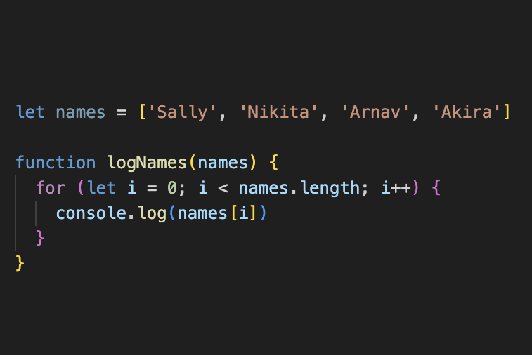
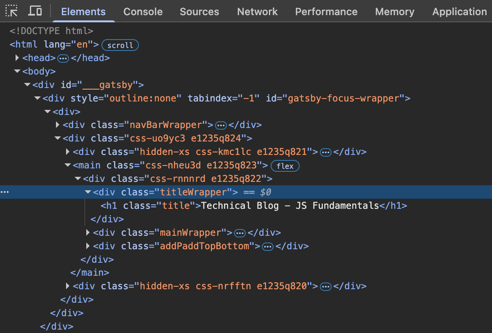
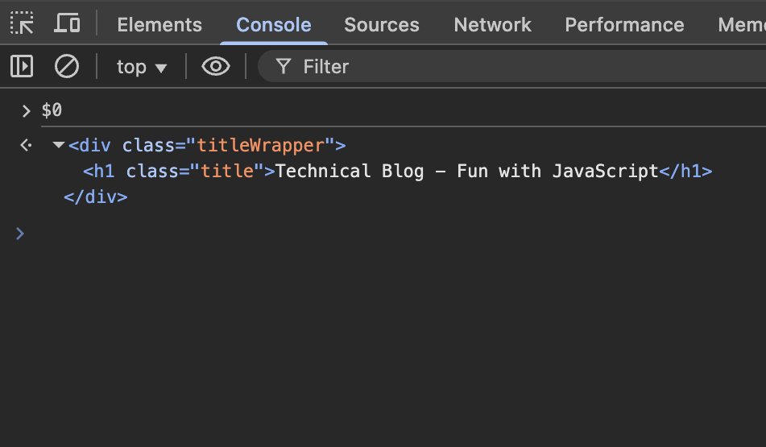
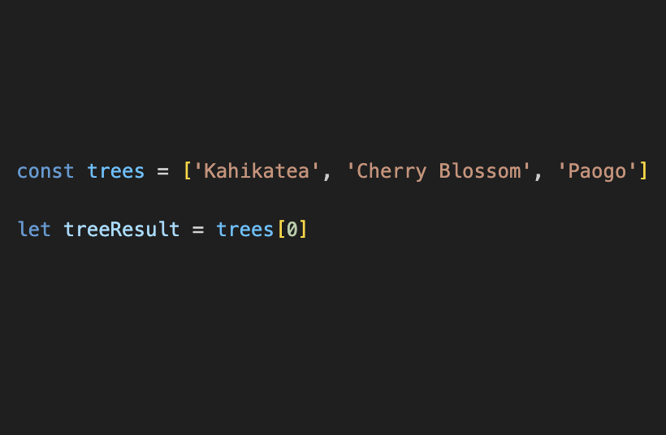
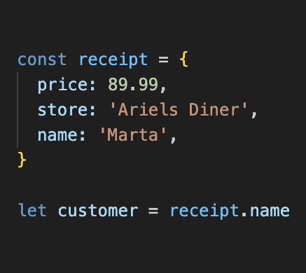
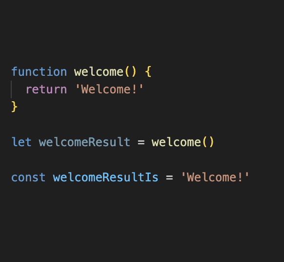

Have you ever seen those videos where colour blind family members are given special glasses that let them see colour for the first time? This is what it's like introducing JavaScript to your HTML and CSS when programming - no, not because it makes you ugly cry (though, based on how challenging this sprint was...maybe?) but because it helps you see the web landscape in a new, exciting way.
In simple terms, HTML helps give structure to your document and CSS offers styling. Javascript works with both of these building blocks, using its own language to give life to these elements. Much is commonplace today - the way things move around your screen in an interesting way or a specific action that follows a mouse click - these are two popular examples of JavaScript at work. It started as a programming language to help make web pages more interactive, but as technology has developed, you can find JavaScript used in many devices including phones and tablets and other applications such as robotics.
By default, the code we write for JavaScript is executed from top to bottom. However, some of the magic that users experience when on webpages or apps is largely helped by 'Control Flow' which allows the order to differ of what code is executed and when. There are certain conditional (true/false) statements and 'loops' available in JavaScript that make this possible and showcase the flexibility and dynamic power of JS. We spent a good amount of time this sprint working on loops, which allow us to circle back over a particular set of tasks to either perform an action repeatedly or compile a list of data.
An example of what a 'for' loop looks like
Imagine you kept an empty list on your fridge and every time you opened it for food during the week, you wrote down anything you were out of. Come the end of the week, you had a shopping list ready and didn't have to sit and remember everything to buy...this is what we hope to achieve with loops - performing a repetitive task with less work.
If you're building a website, you might wonder how such different programming languages can get on so well in the coding process? Enter, the DOM.
Quick story - I can still remember being overseas and the ability to translate foreign languages in real-time started becoming mainstream. It felt crazy to be at a French restaurant and be able to point your phone camera over the menu and get an instant translation back that could help you order. This is how I think of the DOM. Short for 'Document Object Model', it is found in all modern browsers and translates your webpage into a tree-like map, made up of 'objects' and 'nodes'. With enough knowledge of this DOM structure and the language of JavaScript, we can do more than order food from a French menu - we have the tools to make a website that is intuitive, visually appealing and efficient.
Above is an example of the DOM accessing the DevAcademy webpage that outlined this very blog exercise we're doing. Forget the overwhelming amount of text and focus on the line highlighted and the special symbol "$0". This marks the most recent selected node index and offers an easy way to interact with the DOM.
Moving across to the 'Console', we can enter "$0" and it will single out this selected node. From here, we could add javascript, or something more simple like changing the local version of this html heading to "Fun with JavaScript", shown in the above example.
Here's some more simple examples of three important JavaScript structures:
Do you notice the words or 'strings' in between the square brackets? This is an Array. This is a data type specifically for storing a sequence of values. Now that these strings are stored together in this list (named 'trees' in the example) all we need to do is call on the Array to access any of the data stored inside that we need.
Next up, you'll see that we still have a list of items but these sit inside some curly brackets and are separated by commas. This is an Object. This is a data type that creates a container for what we call 'key value pairs' - as you can see in the example, each pair has a property name, a colon, followed by a value. An Object is used as a collection of properties that, at face value, are very random or inconsistent. By calling on the Object, we can access a part of the data inside (like 'name' in this example) or we could program more complex code that accesses all the data inside an Object and offers a new single value based on these properties combined.
This last block of code is called a Function. It is a set of statements in JavaScript that takes inputs, processes them and returns an output. Using them helps us work smarter, not harder. Functions are reusable, they make code easier to read and less repetitive. The example outlines a basic version of this: the function is given the input of 'welcome'. In between the curly brackets, the output is noted as 'Welcome!'. Now we can run this function anytime with this being the expected result.